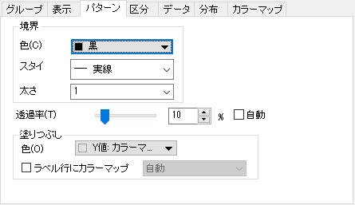
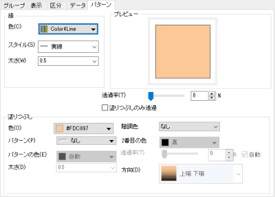

このパターンタブは分布曲線の色付けやそれぞれサンプルの範囲を制御するのに使います。
|  |  |
| 分布曲線のパターンタブ | 境界線のないヒストグラムのパターンタブ |
分布曲線または境界線のないヒストグラムの境界を制御します。
境界線の色を単一の色またはプロットによって適用されるカラーリストで指定します
分布曲線の線のスタイルもしくはヒストグラムの境界線のスタイルを指定します。
分布曲線の線の太さもしくはヒストグラムの境界線の太さを指定します。
分布曲線/ヒストグラムの境界線と塗りつぶし領域の透過率を調整します。
曲線下の範囲もしくはヒストグラムの塗りつぶしを制御します。
分布曲線付きのリッジラインプロットでは曲線下の塗りつぶし範囲の制御をここで行います。ラベル行にカラーマップにチェックを入れると選択した列のラベル行の値で塗りつぶし範囲の色を設定できます。
境界線のないヒストグラムのリッジラインプロットでは、ヒストグラムの設定方法のようにヒストグラムの塗りつぶしを編集できます。